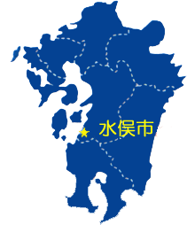
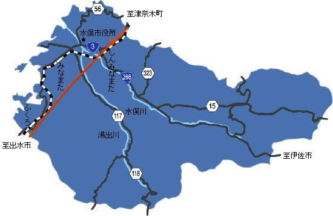

水俣市
ホーム
概要
環境
観光
祭り
場所
水俣市は熊本県の最南端に位置し、鹿児島県出水市、伊佐市に接しています。
北の方へ行くと、芦北町、八代市、熊本市に着きます。
西は八代海、天草に面しています。

人口
人口は約２．２万人
ピークは約５万人でしたが、水俣病及び少子化のためだんだん減っています。
水俣は広いが、ほとんどの人は海の近くに住んでいる。

水俣弁
水俣弁
標準語
よか
よい
どげんしたの？
どうしたの？
暑かろ
暑いね
いわす
言う
せんば
しなければ
水俣弁
標準語
くんち
９日
〜けん
〜から
いっちょ・いっちょん
少しも・全然
さしより
とりあえず
〜っとっと
〜っている